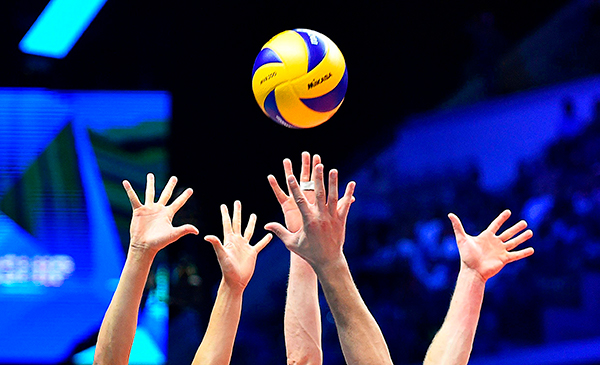

🏐¿Qué es el voleibol?
Es un deporte en el que dos equipos se enfrentan separados por una red. Cada equipo intenta pasar el balón al campo contrario y conseguir puntos evitando que el balón toque su propio suelo.
Pasion, diciplina y trabajo en equipo
El voleibol es un deporte que combina habilidad, velocidad, coordinación y trabajo en equipo. Es una actividad que permite desarrollar capacidades físicas y fortalecer la amistad entre compañeros.
Es un deporte en el que dos equipos se enfrentan separados por una red. Cada equipo intenta pasar el balón al campo contrario y conseguir puntos evitando que el balón toque su propio suelo.
El objetivo principal es conseguir que el balón toque el suelo del equipo contrario. También se debe evitar que la pelota caiga en el propio campo.
Mejora la coordinación, los reflejos, la resistencia, la agilidad y la condición física. Además, fomenta el respeto, la comunicación y el trabajo en equipo.
El voleibol fue creado en 1895 por William G. Morgan, un profesor de educación física estadounidense. Inicialmente recibió el nombre de Mintonette. Su intención era crear un deporte que combinara actividad física y diversión.
Con el paso del tiempo, el deporte se popularizó en diferentes países y se convirtió en una disciplina internacional. En 1964 hizo su debut como deporte olímpico en los Juegos Olímpicos de Tokio.
Organiza las jugadas y prepara el balón para el ataque.
Se especializa en la defensa y recepción del balón.
Realiza ataques para conseguir puntos.
Participa principalmente en los bloqueos y ataques rápidos.
